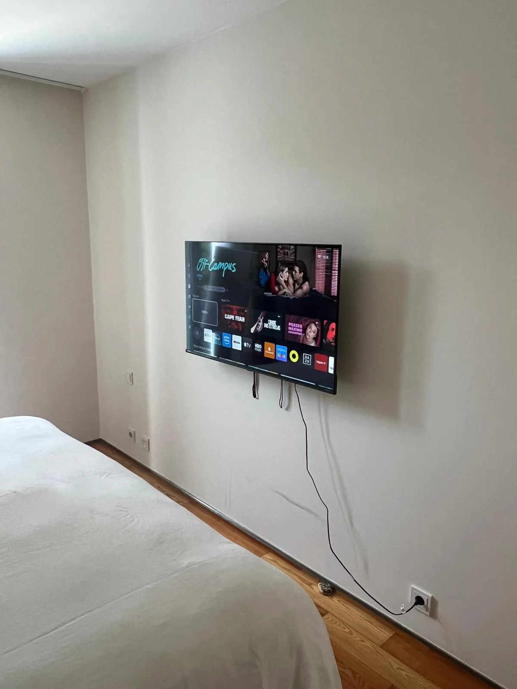
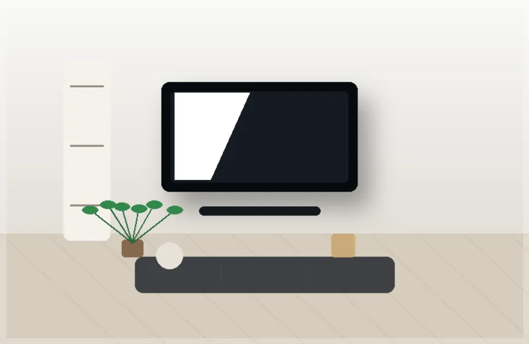
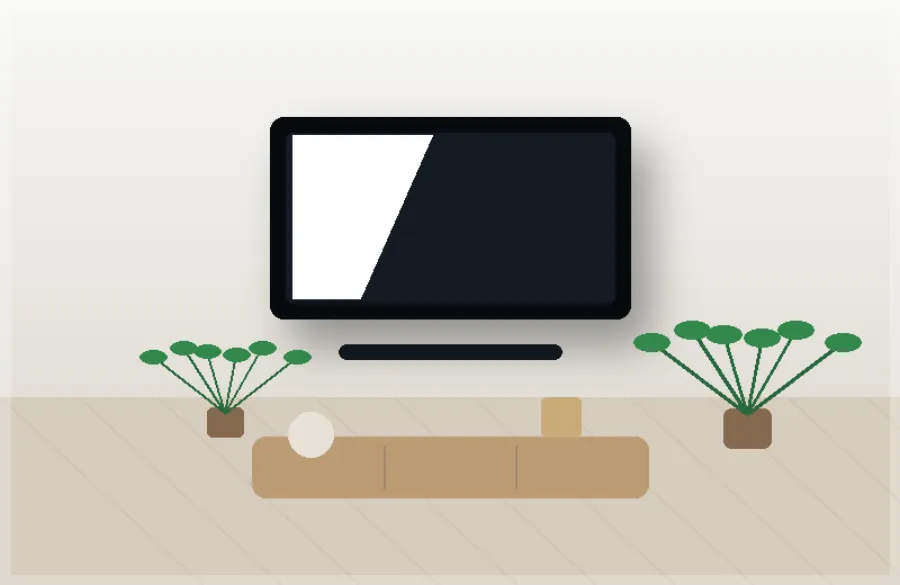
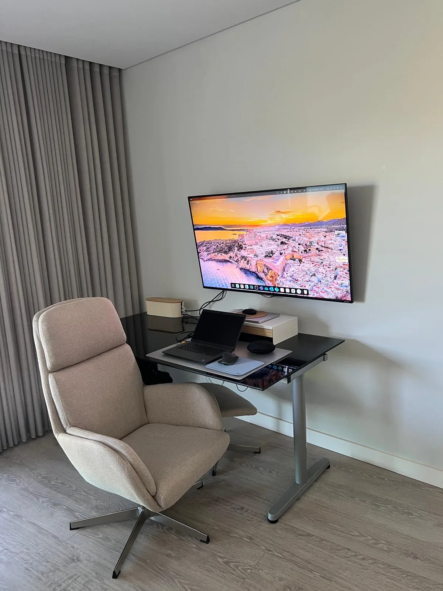
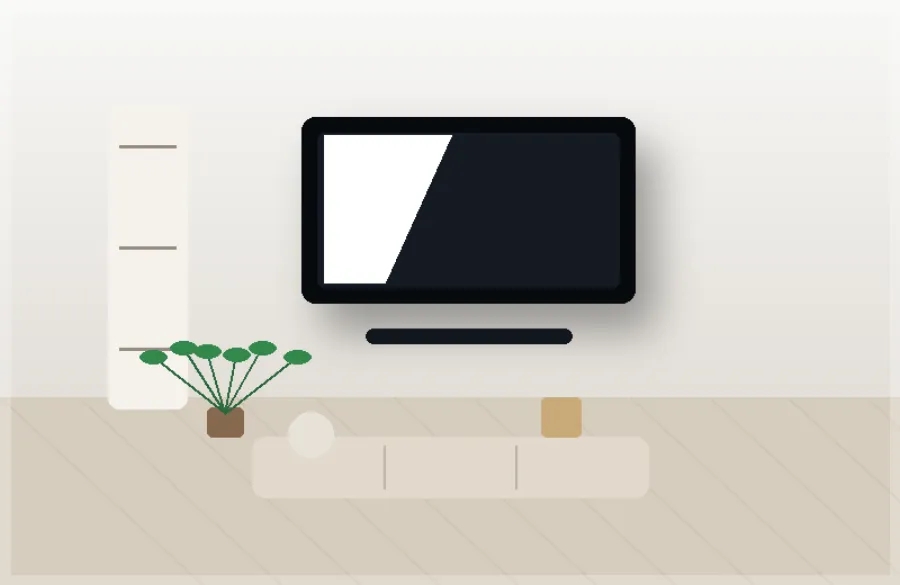

Montare TV pe Perete
Instalare de televizoare cu suport fix, înclinabil sau articulat, asigurând nivelare, siguranță și finisaj profesional.
Aflați mai multInstalăm televizorul pe perete cu aliniere perfectă, fixare sigură și finisaj curat. Lucrăm cu suporturi fixe, înclinabile și articulare pe pereți din beton, cărămidă și gips-carton.

Instalare de televizoare cu suport fix, înclinabil sau articulat, asigurând nivelare, siguranță și finisaj profesional.
Aflați mai multInstalare de suporturi articulare pentru mai mult confort, ajustare a unghiului și vizualizare optimă.
Aflați mai multSoluții pentru ascunderea, alinierea sau organizarea cablurilor, pentru o zonă TV mai curată și elegantă.
Aflați mai multAlegerea fixării potrivite pentru fiecare tip de perete, reducând riscurile și asigurând o instalare sigură.
Aflați mai multOferim servicii de montare TV pe perete în Lisabona, Odivelas, Loures, Amadora, Sintra, Cascais, Almada, Seixal, Barreiro, Montijo și zone apropiate. Pentru alte localități, contactați-ne pe WhatsApp.
Cereți ofertă pe WhatsAppInstalarea se realizează cu atenție la siguranță, aliniere și finisaj final, pentru un TV bine fixat și un spațiu mai organizat.
Trimiteți un mesaj pe WhatsApp cu fotografii ale peretelui și dimensiunea TV.
Stabilim cea mai bună zi și oră pentru instalare.
Realizăm montajul cu siguranță, nivel și grijă profesională.
Fixări rezistente și tehnici profesionale de instalare.
Aliniere perfectă și cabluri ascunse pentru un aspect curat.
Profesioniști calificați cu numeroase instalări realizate.
Respectăm programările și timpul dumneavoastră.
Lucrăm pentru ca dumneavoastră să fiți 100% mulțumiți.





Da, dar este necesară evaluarea structurii peretelui și utilizarea fixărilor adecvate. Nu toți pereții din gips-carton suportă aceeași greutate, deci instalarea trebuie făcută cu atenție.
Putem instala suportul furnizat de client sau putem recomanda tipul cel mai potrivit pentru televizor și perete.
Da, putem organiza sau ascunde cablurile în funcție de tipul peretelui și soluția dorită.
În majoritatea cazurilor, instalarea durează între 1 și 2 ore, în funcție de tipul peretelui, dimensiunea TV și suportul utilizat.
Da, montăm televizoare de diverse dimensiuni. Pentru ecrane mari, evaluăm greutatea, suportul și tipul peretelui înainte de instalare.